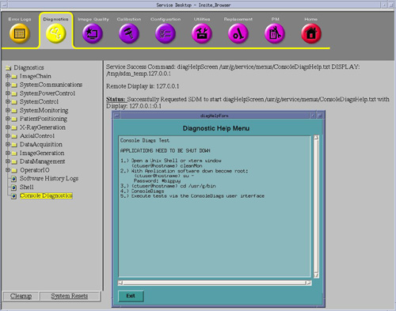

Proprietary to General Electric
Direction 5114045-800, Rev# 10
LightSpeed 4.X Service Information (Advanced)
Proprietary to General Electric |
| Last Revised: | 28 May, 2008 |
Console Diagnostics are a series of hardware specific scripts that utilize common commands automatically. This allows the user to test and or retest consistently without the need for manual keyboard entry. The commands used are basic. The scripts verify communication as required from one Node to another. Additionally, the Node type is identified (as xw8000, xw8200 or xw8400 for Hosts, and as Jarrell or non-Jarrell for DARC and IG Nodes). When applicable the script will perform memory, BIOS and Disk Drive existence. Diagnostics commands that were loaded during the software installation are called up to run and will exercise the DIP Board, the IG Node RAC and the Disk Array (2 raw data disks). Console Diagnostics verify the basic ability for performance in both a manufacturing and field service environment.
This tutorial addresses the Console Diagnostic tests available on the Class C CD for GOC3 and GOC4 Operator Consoles with 07MW18.4 software release, and All-In-One Console with 08BW20.X or later software release. This software also supports the release of Jarrell (DARC2 Node and IG Node) hardware.
| NOTE: | The word Jarrell is spelled incorrectly (Jarrell) in the
IG Node RAC output window(s) for this Pathfinder software release. For All-In-One console, there is no DARC node presence, and only one IG node can be installed. Please refer to All-In-One console theory for details. For All-In-One console, all the commands used on previous DRAC node can be ran on Host Computer for trouble shooting. |
To access the Common Service Desktop, click on the [Service] icon, then [Diagnostics] , then [Console Diagnostics] . (See Illustration 1.) Instructions are provided to shut down applications and perform manual entry in a Unix shell to invoke the diagnostic tool.
Illustration 1: Console Diagnostics Screen

| NOTE: | Class C must be loaded and the Service Key installed to perform Console Diagnostics. |
Application Software must be brought down with one of the following methods:
CSD (Common Service Desktop) via the Utilities / Application Shutdown selection
Unix Shell: {ctuser@hostname} cleanMon
The Operator Console should be rebooted before starting Auto-Console Diagnostics.
If a failure occurs during the testing and the Operator Console has not been rebooted prior to performing the diagnostic test selections, then reboot and retest the Auto-Console Diagnostics.
Before performing Auto-Console Diagnostic testing open a Unix Shell and verify the following to insure hardware [DARC or DARC2 Node and IG Node(s)] readiness. If the hardware is not ready, the diagnostic may be able to assist in determining the issue.
{ctuser@hostname} rsh darc
{ctuser@darc} rsh ig1
{ctuser@ig1} exit
{ctuser@darc} rsh ig2
{ctuser@ig2} exit
{ctuser@darc} rsh ig3
{ctuser@ig3} exit
{ctuser@darc} exit
{ctuser@ hostname }
For All-In-One console, rsh to IG1 from Host Computer directly:
{ctuser@hostname} rsh ig1
{ctuser@ig1} exit
{ctuser@hostname}
Media Failures: New (approved) media should be reserved for the SCSI Tower testing. Media should be formatted in advance and not write-protected.
Media Failures: during the SCSI Tower testing (MOD and DVD) the media content will be destroyed. There may be content / data on media that may cause the DVD and MOD tests to fail. Whenever possible, new or specific media should be reserved for the SCSI Tower testing. Additionally, if the MOD or DVD tests fail, repeat the test and it may pass (and continue to pass). This may be a timing issue.
All system or customer media must be removed from the SCSI Tower before performing Auto-Console Diagnostics. This is done to avoid overwriting the DVD System State or any Customer MOD content. SCSI Tower (MOD/DVD) tests are always destructive to the content of the media installed in the SCSI Tower.
Test anomalies: The Auto-Console Diagnostic script output may report a failure when attempting to ping or rsh (the VDARC or DARC2 and or the IG Nodes). However, the test continues and other checks or diagnostics pass. This may be a timing issue.
Test menu selection 8 is for Installation or for testing after a LFC (Load From Cold) or a DARC or DARC2 replacement. Test selection #8 was designed to recreate or repartition the Disk Array (2 raw disks located in the DARC2 Node or the SDDA) and erase all serial numbers. A pop-up informs the user that the repartition will occur. The script shall perform the erase/create, assemble and query commands (with application software down ONLY).
{ctuser@hostname} rsh darc
{ctuser@darc} sudo gre-raid -z -c (erase all disk s/n and create)
yes
{ctuser@darc} sudo gre-raid -a (assemble the Disk Array)
{ctuser@darc} sudo gre-raid -q (query the Disk Array)
For All-In-One console, 2 raw data disks are in Host computer, don’t need to execute “rsh darc”, run below commands directly:
{ctuser@hostname} sudo gre-raid -z -c (erase all disk s/n and create)
yes
{ctuser@hostname} sudo gre-raid -a (assemble the Disk Array)
{ctuser@hostname} sudo gre-raid -q (query the Disk Array)
Try not to move the mouse around in the pop-up windows. Wait until the tests are completed to view the results.
Test #1, #2. #7 or #8 will allow selection of the DARC or DARC2 Test and the subsequent DIP Test script is performed with or without loopback capability. If loopback capability is selected (Yes, run the loopback test ) the DIP Board diagnostic will test the RX/TX ports.
| NOTE: | For All-in-One console, Test #1, #2, #7 and #8 will only perform DIP test, since there is no DARC node in AIO console. |
If the test fails when loopback capability is selected, the site problem may be one of the following issues:
The Console's internal Fiber Optic Cable is faulty. Isolate the DIP from the internal fiber optic cabling and re-run the DIP loopback test.
The loopback cabling is not installed, it is bad, or it is not fully installed (clicked in)
The DIP board is faulty and must result in a DARC or DARC2 Node replacement
| NOTE: | For All-In-One console, DIP board resides in Host Computer, so DIP board faulty will result in DIP board replacement. |
Install the Service Key.
If the user cannot perform the required reboot , then shutdown Application software to run diagnostics. Open a Unix Shell from the Toolchest and bring down Application software if necessary:
{ ctuser@hostname} cleanMon
| NOTE: | Console Diags requires an Operator Console reboot for optimal performance. |
Close this Unix Shell.
With Application Software down, open a Unix Shell and type the following:
{ctuser@hostname} cd /usr/g/bin
{ctuser@hostname} ls *onsole*
console* ConsoleDiags@ consolediagsgui.py* HartConsoleCollect*
{ctuser@hostname} ConsoleDiags
A Pink Pop-Up Box appears. Click on the [ENTER] box to continue. The message below is displayed:
====================================================
Starting console diagnostics...
Console diags tool must be run as root.
Enter the root password when prompted.
====================================================
Input the required root Password:
Password: #bigguy
The Auto-Configuration Screen appears describing the Console Type and the number of IG Nodes presently configured.
Click on the [Next] button to move forward. The [Previous] button allows the user to return to a previous screen. The [Cancel] button cancels the Auto-Console diagnostic script and allows the script to perform the clean-up process. The [Start Over] button places the user at the Auto-Configuration Screen.
| NOTE: | The number of IG Nodes is based on the value selected during the LFC on the Hardware Screen. If this number is incorrect, perform a reconfig as root on the Host. Select the correct number of IG Nodes and then Accept. |
The next Screen (after the Auto-Configuration Screen) is additional information describing the Operator Console hardware and software present. This information is mainly pulled from the cat /usr/g/config/INFO file. The number of IG Nodes is pulled from a recon hardware file.
| NOTE: | If drac_exist = 0, it indicates that there is no darc node presence, for example, it’s an All-In-One console. |
Click on the [Next] button to move forward.
The Menu Screen provides the selection methodology for testing the various hardware residing within the Operator Console when performing Auto-Console Diagnostics.
Recon Hardware: DIP, Disk Array, IG Node(s)
DIP - DARC node
Scan data disk array (2 raw disks located in either the DARC2 Node, SDDA or Host computer)
RAC - IG Node(s) – all present in the config file
SCSI Tower – MOD and DVD (destructive to media content)
Host Computer
All Non-Destructive Tests (excludes the SCSI Tower tests)
Installation/LFC Tests – Destructive tests: DARC, Disk Array (destructive disk array data), IG Node(s), SCSI Tower (destructive to media content), Host Computer
| NOTE: | For All-In-One console, DARC is not presence. DIP board and scan data disk array reside in Host Computer. When test#1, #2, #7, #8 is selected, console diagnostics will not test darc node, just test DIP board or scan data disks automatically. |
Click on a test menu selection.
Click on the [Next] button to move forward to the Repetitive Screen.
The next screen (not shown) is repetitive information of the test selection.
Click on the [Next] button to move forward to the Contact Screen (or the Repartition Warning Screen Test selection #8 ONLY).
Whenever Test #8 (Installation/LFC Tests – Destructive!) is selected the repartition Scan Disk warning screen will be present. This screen informs the user that Patient Data will be lost/destroyed. Test #7 will be the standard selection for all non-destructive tests. Test #5 will be the standard selection for all SCSI Tower tests
Click the button: Yes, I understand.
Click on the [Next] button to move forward to the Contact screen.
The Contact Screen allows the user to inform other service personnel and Customers that the Operator Console is in use and provides important Contact Information.
If necessary, position the cursor in the Name entry block and click.
Enter your Name or the on-call contact.
Press the Tab keyboard selection.
Enter the Phone number you can be reached at or the on-call contact number.
Click on the [Next] button to move forward to the Iteration Screen (or the Loopback Screen for Test selections #1, #2, #7 or #8 ONLY).
The Iteration Screen allows the user to select the number of passes or iterations required to determine the present failure. Normally, a single (1) iteration is usually adequate to determine a failure, however, intermittent failures may require extensive iterations.
In the Iterations entry field block, input the number of iterations to be performed.
| NOTE: | One iteration of all available tests will take an average of 11 minutes for the 07MWxx.xsoftware release. |
Click on the [Next] button to move forward to the Loopback or Start Screen
Whenever Test #1, #2. #7 or #8 is run the DARC or DARC2 Node or Host Computer (for All-In-One console) is selected. This test script allows for a choice to test the DIP Board in a stand-alone manner or with a loopback capability. If loopback capability is selected the DIP Board diagnostic will test the RX/TX ports when the loopback cable is installed.
Click the button
Yes, run the loopback test
No, do not run the loopback test
Click on the [Next] button to move forward to the Start or Media Screen.
Whenever Test #8 is selected the media inserted/ warning screen will appear. This screen informs the user that the content /data of any media installed in the SCSI Tower (MOD or DVD) will be lost/destroyed. Additionally, the user is informed that the System State should or write-protected media should not be used. Some users may have issues with media containing DICOM.
Insert the media (MOD and DVD) into the SCSI Tower drives.
Wait one minute or until the media inserted has completed initializing.
Click the button: Yes, the media has been inserted.
Click on the [Next] button to move forward to the Start Screen.
The Start Screen allows the user the choice of starting the Auto-Console Diagnostic Tests at any time.
| NOTE: | When the [Start] button is selected the user may no longer select the [Previous] button to adjust test selection set-up. |
Click on the [Start] button to begin testing.
The Auto-Console Diagnostic log files are overwritten with each time the script is run.
{ctuser@hostname} su -
Password: #bigguy
[root@hostname] cd /usr/g/bin
[root@hostname] ls *_test*.log
For All-In-One console.
{ctuser@hostname} su -
Password: #bigguy
[root@hostname] cd /tmp
[root@hostname] ls *_test*.log
In this section, examples are provided to assist the user in determining potential output. To view a selection, click on a link below. When you have finished viewing the output, click the Back button to return to this point.
| NOTE: | Not every example of output can be provided (failing vs. passing). However, different output may be expected for Westville and Jarrell hardware. |
Section 10.1 - Host Test - xw8000
Section 10.2 - Host Test - xw8200
Section 10.3 - Non-Destructive Disk Array Test
Section 10.4 - DARC Test for a Jarrell DARC Node
Section 10.5 - RAC Test for a Jarrell IG Node
Section 10.6 - MOD Test
Section 10.7 - DVD Test with Failing Output
Section 10.8 - DVD Test with Passing Output
Section 10.9 - DARC Test with Loopback selected but no loopback cable installed
Section 10.10 - DARC Test with Loopback Cable Installed
Section 10.11 - Destructive Disk Array Test with –c Command
Section 10.12 - Host Test - xw8400
This section attempts to discuss the usage of manual commands and show output for clarity.
| NOTE: | This section is not applicable for All-In-One console. |
The ipmitool is actively available on PET systems. On a CT system this tool may need to be activated for use on the Host to the DARC Node for the power check. The ipmitool command allows the user to look at the DARC Node using the Ethernet Cable from the Host to the DARC Node but does not utilize the NIC. The ipmitool command requirements are: the AC Line-in Power Cord must be good and properly connected, the rear-panel DARC Node power switch (if present) must be set to the ON position, and the Ethernet Cable between the Host and DARC Node must be good and properly connected in the correct ports.
/usr/g/DARC_RPM
[root@hostname]# cd /usr/g/DARC_RPM
root@hostname]# ls
ipmitool-1.8.2-1.rhel3.i386.rpm
Type the following command (including the spacebar at the end):
[root@hostname]# rpm -i -U --nodeps --hash –replacefiles<spacebar>
Then copy and paste the current latest version as shown of the ipmitool version. The ipmitool version command contains the number one and the lower case letter L which can be easy misread.
[root@hostname]# rpm -i -U --nodeps --hash --replacefiles ipmitool-1.8.2-1.rhel3.i386.rpm
Then ipmitool will display output that it has installed – or it may already be installed previously and will display an output.
########################################### [100%] package ipmitool-1.8.2-1.rhel3 is already installed
Example of ipmitool usage:
[root@hostname]# ipmitool –I lan –H darc –A NONE chassis power status
Chassis Power is on.
| NOTE: | This section is not applicable for All-In-One console. |
Ensure the DARC power cord is inserted and has rear DARC Node power switch (if present) is set to the ON position.
Ensure the Host to DARC Ethernet cable is fully inserted.
Try ethtool –p eth# command as root, where # is the Ethernet numerical identifier.
Try another Ethernet Cable.
Verify Ethernet Cable is inserted into the correct port on the Host and DARC Node.
If the problem persists, reload sw for DARC Node.
If the problem persists, perform LFC.
[root@hostname]# ping darc
PING darc (172.16.0.2) 56(84) bytes of data. 64 bytes from darc (172.16.0.2): icmp_seq=0 ttl=64 time=0.156 ms 64 bytes from darc (172.16.0.2): icmp_seq=1 ttl=64 time=0.292 ms 64 bytes from darc (172.16.0.2): icmp_seq=2 ttl=64 time=0.230 ms
Select <Ctrl-C >on the keyboard to stop ping process
--- darc ping statistics --- 3 packets transmitted, 3 received, 0% packet loss, time 1999ms rtt min/avg/max/mdev = 0.156/0.226/0.292/0.055 ms, pipe 2
If the ping darc process fails verify your Host Type sees the DARC.
Try the Host specific ifconfig command below (could be confusing). So perform the ifconfig command (for your Host type) and verify the address is correct.
Try the telnet command.
DARC Node NIC port for Host Type xw8000
[root@hostname]# ifconfig eth2 | grep MTU
Does running show up and correct address…?
If NO for Running, then check network cable.
Try using the command: [root@hostname]ethtool –p –eth2 on the HOST for that NIC port address and visually verify blinking port LED,, then <Ctrl-C> to stop.
OR
DARC Node NIC port for Host Type xw8200
[root@hostname]# ifconfig eth0 | grep MTU
Does running show up and correct address…?
If NO for Running, then check network cable.
Try using the command: [root@hostname]ethtool –p –eth0 on the HOST for that NIC port address and visually verify blinking port LED,, then <Ctrl-C> to stop.
| NOTE: | This section is only applicable for All –In-One console. |
Ensure the IG power cord is inserted and has rear IG Node power switch (if present) is set to the ON position.
Ensure the Host to IG Ethernet cable is fully inserted.
Try to power off/on IG several times. Then try ping command.
Try ethtool –p eth0command as root on Host, and visually verify blinking port LED, then <Ctrl-C>to stop.
Try another Ethernet Cable.
Verify Ethernet Cable is inserted into the correct port on the Host and IG Node.
The ifconfig command as run on the 8000, 8200 or 8400 Host Computer (outputs are different for each Host type) from ctuser will verify if there is any type of active connection – but not necessarily the correct active connection. Active connections can be verified using the ping process. Look for running. Remember that running is a moment in time and does not mean the connection is still active for the next moment in time.
| NOTE: | The DARC Subnet may have been changed from 172.16.0.xx to 169 base ONLY if there was a 172.16.0.xx Hospital Network conflict, if DARC is presence. |
| NOTE: | For AIO console, IG Subnet may have been changed from 10.0.1.xx to 169 base ONLY if there was a 10.0.1.xx Hospital Network conflict, if IG is presence. |
{ctuser@hostname} ifconfig
Here are links to sample output:
Section 11.1.1 - Eth0 is the Hospital backbone- port “A”
Section 11.1.2 - Eth2 is the HOST to DARC connection - port “C”
Section 11.1.3 - Eth3 is the Gantry TGP connection - port “D”
Section 11.1.4 - Eth4 AW/Host Main Connection
Section 11.1.5 - Under Unix/Linux this is the local device that is the local system (Software pseudo device)
{ctuser@hostname} ifconfig
Here are links to sample output:
Section 11.2.1 - Eth0 is the HOST to DARC connection - port “C”
Section 11.2.2 - Eth1 is the Gantry TGP connection - port “D”
Section 11.2.3 - Eth2 is the Hospital backbone- port “A
Section 11.2.4 - Eth4 AW/Host Main Connection
{ctuser@hostname} ifconfig
Here are links to sample output:
Section 11.3.1 - Eth0 is the HOST to IG connection - port “C”
Section 11.3.2 - Eth1 is the Gantry TGP connection - port “D”
Section 11.3.3 - Eth2 is the Hospital backbone- port “A”
Section 11.3.4 - Eth4 AW/Host Main Connection
FE To Do List - Error Correction for No Running status on Host (to DARC) NIC:
If the ifconfig command does not see the DARC as running – verify the Host NIC is not loose or partially skewed in the Host PCI Motherboard Connector.
If the NIC was installed correctly verify the Host Computer NIC port C using the ethtool –p eth# tool as root on the Host (ethtool –p eth2 for xw8000 ----- ethtool –p eth0 for xw8200).
If NIC was installed correctly and the Host NIC port to the DARC LED was blinking during the ethtool process - verify the Ethernet Cable between the Host and DARC is good (properly inserted and in the correct location). Try swapping in another Ethernet Cable to see if the cable is the issue.
If the ifconfig command does not see the DARC as running – verify the Host Verify the ‘telnet localhost 623’ command is able to ‘Login successful’. The dpcproxy service must be running.
For Apps UP issues verify the ssh darc command is successful. This is the security shell command and checks for unknown hosts.
FE To Do List - Error Correction for No Running status on Host (to IG) NIC – All-In-One console:
If the ifconfig command does not see the IG as running – verify the Host NIC is not loose or partially skewed in the Host PCI Motherboard Connector.
If the NIC was installed correctly verify the Host Computer NIC port C using the ethtool –p eth0 tool as root on the Host.
If NIC was installed correctly and the Host NIC port to the DARC LED was blinking during the ethtool process - verify the Ethernet Cable between the Host and IG is good (properly inserted and in the correct location). Try swapping in another Ethernet Cable to see if the cable is the issue.
If the ifconfig command does not see the IG as running – verify the Host Verify the ‘telnet localhost 623’ command is able to ‘Login successful’. The dpcproxy service must be running.
For Apps UP issues verify the ssh darc command is successful. This is the security shell command and checks for unknown hosts.
| NOTE: | This section is not applicable for All-In-One console. |
[root@hostname]# service cliservice start
The dpcproxy is running
********** OR ***********
restarted dpcproxy
[root@hostname]# telnet localhost 623
Trying 127.0.0.1...
Connected to localhost.
Escape character is '^]'.
Server: darc
Username: <select the Enter key on keyboard>
Password: <select the Enter key on keyboard>
Login successful
dpccli>power -state
The power is on
dpccli> exit
FE To Do List - Error Correction for No telnet from Host to DARC:
If the telnet process fails, ensure that the SOL is OK, then halt the DARC Node as root on darc. Wait 2 – 3 minutes, then remove DARC Node power at the front of the DARC Node. Then load the SOL CD into the front of the DARC Node and power on the DARC Node. The SOL CD will automatically eject when completed.
Verify the DARC power cord has power and is inserted properly into the DARC and the rear power switch is turned ON.
If the Power State command fails visually verify DARC power switch at the front is turned on. Visually verify the DARC LAN LED is illuminated and not burnt out. If telnet is successful and the LAN LED is not illuminated then it is burnt out – replace the DARC when time permits.
Try restarting the DARC Node as root on the host: service darcpower start
Retry another Ethernet Cable between the Host and DARC (properly inserted and in the correct location).
Move the Ethernet Cable at the DARC NIC to see if the DARC NIC is loose – and therefore the issue.
Move the Host to DARC Ethernet Cable to another port on the DARC NIC and see if there is DARC NIC activity.
If the problem persists, replace DARC Node
[root@darc ~]# ifconfig
SeeSection 11.4 for sample output.
For All-In-One console, run ifconfig on Host Computer.
[root@hostname]# ifconfig
See Section 11.3for sample output.
[root@darc]# service cliservice start
The dpcproxy is running
********** OR ***********
restarted dpcproxy
[root@darc]# telnet localhost 623
Trying 127.0.0.1...
Connected to localhost.
Trying 127.0.0.1...
Server: ig#
Username: <select the Enter key on keyboard>
Password: <select the Enter key on keyboard>
Login successful
dpccli> power -state
The power is on
dpccli> exit
| NOTE: | For All-In-One console, telnet IG node from Host Computer with the same commands. |
[root@darc log]# cd /var/log
[root@darc log]# more message
| NOTE: | At the bottom of the page where you see --More--(0%)type a command as follows to see a pattern or output on that page, otherwise, if it is not there –‘Pattern not found’ is displayed! |
/dazed (for NMI Errors)
/Parity (for Parity issues)
For All-In-One console, see the log file on host computer.
[root@hostname]# cd /var/log
[root@hostname]# cd more message
10:12:13 darc dhcpd: DHCPDISCOVER from 00:0e:0c:9f:46:ce via eth0
Mar 13 10:12:13 darc dhcpd: DHCPOFFER on 10.0.2.2 to 00:0e:0c:9f:46:ce via eth0
Mar 13 10:12:13 darc dhcpd: DHCPDISCOVER from 00:0e:0c:9f:46:ce via eth0
Mar 13 10:12:13 darc dhcpd: DHCPOFFER on 10.0.2.2 to 00:0e:0c:9f:46:ce via eth0
Mar 13 10:12:13 darc dhcpd: DHCPREQUEST for 10.0.2.2 (10.0.2.1) from 00:0e:0c:9f:46:ce via eth0
Mar 13 10:12:13 darc dhcpd: DHCPACK on 10.0.2.2 to 00:0e:0c:9f:46:ce via eth0
May 12 11:01:19 darc kernel: end_request: I/O error, dev hda, sector 115260346
May 12 11:01:19 darc kernel: I/O error in filesystem ("hda9") meta-data dev hda9 block 0x5618d28 ("xfs_trans_read_buf") error 5 buf count 4096
| NOTE: | Per Section 5 of this document, “Menu Selections for Console Diagnostics,” this test can be performed via menu selections 6, 7, and 8. |
----Starting Host Test---- started on: 2007-02-05 16:25:53 ----Number of Iterations: 1---- Starting to run the Host diagnostic... Each iteration of this diagnostic will take a maximum of 2 minutes to complete. 1 iterations were selected. Computer type is... 8000 ==================================================== Iteration 1 of 1 starting... *** Testing for drive existance *** -------- Output of scsistat ------- Device 0 02 Direct-Access FUJITSU MAX3073NP FW Rev: HPF1 Device 1 00 Direct-Access FUJITSU MAX3073NP FW Rev: HPF1 Device 1 01 Direct-Access FUJITSU MAX3073NP FW Rev: HPF1 Device 2 03 Optical Device SONY SMO-F551-SD FW Rev: 1.05 Device 2 04 CD-ROM MATSHITA DVD-RAM SW-9574S FW Rev: AZX8 ----------------------------------- OK. Drive existance test passed. *** Testing BIOS status *** Checking host for BIOS version... Ok. BIOS Test passed. *** Testing memory *** Checking host for available memory... Main memory size: 2048 Mbytes Ok. Memory Test passed. *** Testing Image Disk RAID *** Image Disk RAID test passed.
| NOTE: | This test will only fail if Image Disk 1 is not present in the RAID on the Host Computer! |
*** Testing IDE interface *** OK. Host IDE interface test passed. 1 1 The Host test passed 1 of 1 total iterations. *** Testing complete *** Creating report... Please review the log file : /tmp/host_test.log All iterations have passed. PASSED
| NOTE: | Per Section 5 of this document, “Menu Selections for Console Diagnostics,” this test can be performed via menu selections 6, 7, and 8. |
----Starting Host Test---- started on: 2007-01-23 18:36:06 ----Number of Iterations: 1---- Starting to run the Host diagnostic... Each iteration of this diagnostic will take a maximum of 2 minutes to complete. 1 iterations were selected. Computer type is... 8200 ==================================================== Iteration 1 of 1 starting... *** Testing for drive existance *** -------- Output of scsistat ------- Device 0 02 Direct-Access FUJITSU MAX3073NP FW Rev: HPF1 Device 1 00 Direct-Access FUJITSU MAX3073NP FW Rev: HPF1 Device 1 01 Direct-Access FUJITSU MAX3073NP FW Rev: HPF1 Device 2 03 Optical Device SONY SMO-F551-SD FW Rev: 1.05 Device 2 04 CD-ROM MATSHITA DVD-RAM SW-9574S FW Rev: AZX8 ----------------------------------- OK. Drive existance test passed. *** Testing BIOS status *** Checking host for BIOS version... Ok. BIOS Test passed. *** Testing memory *** Checking host for available memory... Main memory size: 4096 Mbytes Ok. Memory Test passed. *** Testing Image Disk RAID *** Image Disk RAID test passed.
| NOTE: | This test will only fail if Image Disk 1 is not present in the RAID on the Host Computer! |
*** Testing IDE interface *** OK. Host IDE interface test passed. 1 1 The Host test passed 1 of 1 total iterations. *** Testing complete *** Creating report... Please review the log file : /tmp/host_test.log All iterations have passed. PASSED
| NOTE: | Per Section 5 of this document, “Menu Selections for Console Diagnostics,” this test can be performed via menu selections 1, 3, and 7. |
----Starting Disk Array Test----
started on: 2007-02-02 20:07:03
----Number of Iterations: 1----
Starting to run the Disk Array diagnostic...
Each iteration of this diagnostic will take a maximum of 5
minutes to complete.
1 iterations were selected.
Product type is GRE
====================================================
Iteration 1 of 1 starting...
Performing rsh to DARC...
OK.
Successful rsh to DARC
Checking raid configuration...
rsh darc /usr/g/bin/gre-raid -q
Checking raid partition...
rsh darc df /raw_data
Checking raid performance...
rsh darc gre-file-perf -s 15 /raw_data
1 1
The Disk Array test passed 1 of 1 total iterations.
*** Testing complete ***
Creating report...
Please review the log file : /tmp/diskarray_test.log
All iterations have passed.
PASSED| NOTE: | Per Section 5 of this document, “Menu Selections
for Console Diagnostics,” this test can be performed via menu
selections 1, 2, 7, and 8. For All-In-One console, DIP board in Host is tested. |
Information: Jarrell DARC
----Starting DARC Diagnostics----
started on: 2007-02-02 20:07:02
----Number of Iterations: 1----
Starting to run the DARC diagnostic...
Each iteration of this diagnostic will take a maximum of 60
seconds to complete.
1 iterations were selected.
====================================================
Iteration 1 of 1 starting...
Performing ping/rsh to DARC...
OK
Performing ssh to DARC...
ssh from Host to darc was successful.
OK.
Verifying the DIP exists...
... Executing command : rsh darc lsmod | grep pci_dip ...
OK.
Verifying DIP diagnostics are not already running...
... Executing command : rsh darc ps -ef | grep -v grep | grep Dip
Diag ...
OK.
... Executing command : check_config ...
Elapsed time: 00 minutes 07 seconds
... Executing command : rsh darc /usr/sbin/dmidecode | grep -A5 "
Base Board Information" | grep "Product Name" | awk --field-separ
ator ': ' '{print $2}' ...
Information: Jarrell DARC
====================================================
Iteration 1 of 1 starting...
... Executing command : tail -1 /tmp/stopstatus.log ...
Checking darc for available memory...
Main memory size: 2048 Mbytes
Ok.
Checking darc for BIOS version...
Version: SE7520JR23.86B.P.10.00.0087.120820051348
Ok.
Running DIP diagnostics...
... Executing command : rsh darc /usr/g/bin/DipDiag --ex 1,2,3,4,
5,6 ...
Elapsed time: 00 minutes 20 seconds
1 1
The DIP test passed 1 of 1 total iterations.
*** Testing complete ***
Creating report...
Please review the log file : /tmp/dip_test.log
All iterations have passed.
PASSED
| NOTE: | Per Section 5 of this document, “Menu Selections for Console Diagnostics,” this test can be performed via menu selections 1, 4, 7, and 8. |
----Starting IG1 RAC Diagnostics----
started on: 2007-02-02 20:07:04
----Number of Iterations: 1----
Starting to run the IG1 RAC diagnostic...
Each iteration of this diagnostic will take a maximum of 45
seconds to complete.
1 iterations were selected.
Performing rsh to DARC...
OK.
Successful rsh to DARC
Performing ping/rsh to IG1...
Verifying the IG1 RAC exists...
OK.
Prepping rac for IG1
SE7520JR23D
Information: Jerrell IG
====================================================
Iteration 1 of 1 starting...
Checking ig1 for available memory...
Main memory size: 2048 Mbytes
Ok.
Checking ig1 for BIOS version...
Version: SE7520JR23.86B.P.11.10.0089.042620061840
Ok.
Running RAC self tests...
1 1
The RAC test passed 1 of 1 total iterations.
*** Testing complete ***
Creating report...
Please review the log file: /tmp/rac_test1.log
All iterations have passed.
PASSED
| NOTE: | Per Section 5 of this document, “Menu Selections for Console Diagnostics,” this test can be performed via menu selections 5 and 8. |
| NOTE: | Try turning the MOD media over to other side and see if it passes. Or try a new MOD media that is formatted. |
Initializing the test data... -------Starting MOD Test-------- ----Number of Iterations: 1---- Executing scsistat command... MOD drive was detected during the last boot. Verifying MOD is not mounted... Checking for MOD media... Ok. Placing a filesystem on the MOD media... Filesystem created. Starting to test the MOD... Each iteration of the diagnostic will take a maximum of 45 seconds to complete. 1 iterations were selected. Running ... ==================================================== Iteration 1 of 1 starting... Mounting... Copying test data... Comparing test data... The MOD test passed 1 of 1 total iterations. PASSED
| NOTE: | Per Section 5 of this document, “Menu Selections for Console Diagnostics,” this test can be performed via menu selections 5 and 8. |
| NOTE: | Whenever a SCSI Tower diagnostic fails, always retest. If it fails again, try a new media. |
-------Starting DVD Test-------- ----Number of Iterations: 1---- Executing scsistat command... DVD drive was detected during the last boot. Verifying DVD is not mounted... Checking for DVD media... Ok. Placing a filesystem on the DVD media... Filesystem created. Checking to see if DVD drive is already mounted... Executing e2fsck check... Error: e2fsck check detected errors. Reason: e2fsck 1.38 (30-Jun-2005) e2fsck: Attempt to read block from filesystem resulted in short read while trying to open /dev/dvd Could this be a zero-length partition? *** Error Detected *** DVD test failed View error(s) above. Creating report... : /tmp/dvd_test.log FAILED
| NOTE: | Per Section 5 of this document, “Menu Selections for Console Diagnostics,” this test can be performed via menu selections 5 and 8. |
| NOTE: | Try turning the DVD media over to other side and see if it passes. Or try a new DVD media that is formatted. |
-------Starting DVD Test-------- ----Number of Iterations: 1---- Executing scsistat command... DVD drive was detected during the last boot. Verifying DVD is not mounted... Checking for DVD media... Ok. Placing a filesystem on the DVD media... Filesystem created. Checking to see if DVD drive is already mounted... Executing e2fsck check... The e2fsck /dev/dvd/status is: clean. Starting to test the DVD... Each iteration of the diagnostic will take a maximum of 45 seconds to complete. 1 iterations were selected. Running and only failures are displayed. ==================================================== Iteration 1 of 1 starting... Mounting... Copying test data... Comparing test data... The DVD test passed 1 of 1 total iterations. PASSED
| NOTE: | Per Section 5 of this document, “Menu Selections
for Console Diagnostics,” this test can be performed via menu
selections 1, 2, 7, and 8. For All-In-One console, DIP board in Host is tested. |
... Executing command : whoami ...
You must be 'root' to run this diagnostic.
Application software must be down to run diagnostics.
----Starting DARC Diagnostic----
started on: 2007-02-02 20:21:59
----Number of Iterations: 1----
Starting to run the DARC diagnostic...
Each iteration of this diagnostic will take a maximum of 60
seconds to complete.
1 iterations were selected.
Performing ping/rsh to DARC...
OK.
Performing ssh to DARC...
ssh from Host to darc was successful.
OK.
Verifying the DIP exists...
... Executing command : rsh darc lsmod | grep pci_dip ...
OK.
Verifying DIP diagnostics are not already running...
... Executing command : rsh darc ps -ef | grep -v grep | grep Dip
Diag ...
OK.
... Executing command : check_config ...
Elapsed time: 00 minutes 06 seconds
... Executing command : rsh darc /usr/sbin/dmidecode | grep -A5 "Base B
oard Information" | grep "Product Name" | awk --field-separator ': ' '{
print $2}' ...
Information: Jarrell DARC
====================================================
Iteration 1 of 1 starting...
... Executing command : tail -1 /tmp/stopstatus.log ...
Checking darc for available memory...
Main memory size: 2048 Mbytes
Ok.
Checking darc for BIOS version...
Version: SE7520JR23.86B.P.10.00.0087.120820051348
Ok.
Running DIP Diag External LoopBack Test #7...
... Executing command : rsh darc /usr/g/bin/DipDiag --ex 7 ...
Elapsed time: 00 minutes 02 seconds
----------------------------------------------------------
Error: DIP External LoopBack Test #7 response was not acceptable.
Expected: ' All tests passed '
Actual : ' 09:41:35 opening LINUX device /dev/dip
creating H16 dip interface
DIP PN : 2326523 C
error - failed in select
test 7 Failed External LoopBack Test
1 loops 1 failures
1 tests failed
'
----------------------------------------------------------
Running DIP Diag External LoopBack Test #8...
If errors are encountered, this test could take approximately 3.5 minut
es to complete !!
... Executing command : rsh darc /usr/g/bin/DipDiag --ex 8 ...
Elapsed time: 00 minutes 03 seconds
----------------------------------------------------------
Error: DIP External LoopBack Test #8 response was not acceptable.
Expected: ' All tests passed '
Actual : ' 09:41:35 opening LINUX device /dev/dip
creating H16 dip interface
DIP PN : 2326523 C
gdip_dma_test(3,8388608,1,2048,0)
error - Timeout waiting for DMA interrupt
test 8 Failed DMA Test
1 loops 1 failures
1 tests failed
'
----------------------------------------------------------
----------------------------------------------------------
Error: Loopback failing test 7 and test 8
Loopback cable is missing or damaged, bad path, or the DIP board
is damaged.
1. Check the loopback cable and path with a flashlight.
2. If the loopback cable is good, reinsert and verify fiber
optic connections are fully snapped in.
3. Run DIP test with loopback.
If loopback tests 7 and 8 still fail, replace the DARC.
Expected: ' 0 '
Actual : ' -1 '
----------------------------------------------------------
Status= -600
Loopback cable testing is failed, continue with other testcases.
Running DIP diagnostics...
... Executing command : rsh darc /usr/g/bin/DipDiag --ex 1,2,3,4,5,6 ..
.
Elapsed time: 00 minutes 20 seconds
Error: iteration 1 of 1 failed.
1 0
The DIP test passed 0 of 1 total iterations.
*** Testing complete ***
Creating report...
Please review the log file : /tmp/dip_test.log
There were one or more iterations that failed.
FAILED
2007-02-02 20:22:36
EOF| NOTE: | Per Section 5 of this document, “Menu Selections
for Console Diagnostics,” this test can be performed via menu
selections 1, 2, 7, and 8. For All-In-One console, DIP board in Host is tested. |
----Starting DARC Diagnostic----
started on: 2007-02-05 16:19:58
----Number of Iterations: 1----
Starting to run the DARC diagnostic...
Each iteration of this diagnostic will take a maximum of 60
seconds to complete.
1 iterations were selected.
Performing ping/rsh to DARC...
OK.
Performing ssh to DARC...
ssh from Host to darc was successful.
OK.
Verifying the DIP exists...
... Executing command : rsh darc lsmod | grep pci_dip ...
OK.
Verifying DIP diagnostics are not already running...
... Executing command : rsh darc ps -ef | grep -v grep | grep Dip
Diag ...
OK.
... Executing command : check_config ...
Elapsed time: 00 minutes 07 seconds
... Executing command : rsh darc /usr/sbin/dmidecode | grep -A5 "Base Board Information" | grep "Product Name" | awk --field-separator ': ' '{print $2}' ...
Information: Jarrell DARC
====================================================
Iteration 1 of 1 starting...
... Executing command : tail -1 /tmp/stopstatus.log ...
Checking darc for available memory...
Main memory size: 2048 Mbytes
Ok.
Checking darc for BIOS version...
Version: SE7520JR23.86B.P.10.00.0087.120820051348
Ok.
Running DIP Diag External LoopBack Test #7...
... Executing command : rsh darc /usr/g/bin/DipDiag --ex 7 ...
Running DIP Diag External LoopBack Test #8...
If errors are encountered, this test could take approximately 3.5 minutes to complete !!
... Executing command : rsh darc /usr/g/bin/DipDiag --ex 8 ...
Elapsed time: 00 minutes 03 seconds
Running DIP diagnostics...
... Executing command : rsh darc /usr/g/bin/DipDiag --ex 1,2,3,4,5,6 ...
Elapsed time: 00 minutes 20 seconds
1 1
The DIP test passed 1 of 1 total iterations.
*** Testing complete ***
Creating report...
Please review the log file : /tmp/dip_test.log
All iterations have passed.
PASSED| NOTE: | Per Section 5 of this document, “Menu Selections for Console Diagnostics,” this test can be performed via selection 8. |
----Starting Disk Array Test----
started on: 2007-02-02 20:07:03
----Number of Iterations: 1----
Starting to run the Disk Array diagnostic...
Each iteration of this diagnostic will take a maximum of 5
minutes to complete.
1 iterations were selected.
Product type is GRE
====================================================
Iteration 1 of 1 starting...
Performing rsh to DARC...
OK.
Successful rsh to DARC
Checking raid configuration...
rsh darc /usr/g/bin/gre-raid -q
Checking raid partition...
rsh darc df /raw_data
Checking raid performance...
rsh darc gre-file-perf -s 15 /raw_data
1 1
The Disk Array test passed 1 of 1 total iterations.
*** Testing complete ***
Creating report...
Please review the log file : /tmp/diskarray_test.log
All iterations have passed.
PASSED| NOTE: | Per Section 5 of this document, “Menu Selections for Console Diagnostics,” this test can be performed via menu selections 6, 7, and 8. |
----Starting Host Test---- started on: 2008-05-21 01:25:57 ----Number of Iterations: 1---- Starting to run the Host diagnostic... Each iteration of this diagnostic will take a maximum of 2 minutes to complete. 1 iterations were selected. Computer type is... HP xw8400 Workstation ==================================================== Iteration 1 of 1 starting... -------- Output of scsistat ------- Device 1 03 Optical Device SONY SMO-F551-SD FW Rev: 1.05 Device 1 04 CD-ROM MATSHITA DVD-RAM SW-9574S FW Rev: AZX8 Device 2 00 Direct-Access SEAGATE ST3146855SS FW Rev: HPS2 Device 2 01 Direct-Access SEAGATE ST3146855SS FW Rev: HPS2 Device 2 02 Direct-Access SEAGATE ST3146855SS FW Rev: HPS2 Device 2 03 Direct-Access SEAGATE ST3146855SS FW Rev: HPS2 ----------------------------------- Successful: Found 4 devices Checking host for BIOS version... Ok. Checking host for available memory... Main memory size: 794624 Mbytes Ok. 1 1 The Host test passed 1 of 1 total iterations. *** Testing complete *** Creating report... Please review the log file : /tmp/host_test.log All iterations have passed. PASSED
| NOTE: | Hospital Backbone cannot be 172.16.0.x unless DARC is changed to the169 base. |
Link encap:Ethernet HWaddr 00:07:E9:0D:03:24
inet addr:3.231.48.2 Bcast:3.231.48.0 Mask:255.255.252.0
UP BROADCAST RUNNING MULTICAST MTU:1500 Metric:1
RX packets:16497 errors:0 dropped:0 overruns:0 frame:0
TX packets:450 errors:0 dropped:0 overruns:0 carrier:0
collisions:0 txqueuelen:100
RX bytes:1596730 (1.5 Mb) TX bytes:66981 (65.4 Kb)
Interrupt:28 Base address:0x2800 Memory:da140000-0
| NOTE: | DARC could be set to 169 base if Hospital Backbone Subnet Site IP is 172.16.0.x). |
Link encap:Ethernet HWaddr 00:07:E9:0D:06:DC
inet addr:172.16.0.1 Bcast:172.16.0.255 Mask:255.255.255.0
UP BROADCAST RUNNING MULTICAST MTU:1500 Metric:1
RX packets:8721 errors:0 dropped:0 overruns:0 frame:0
TX packets:7041 errors:0 dropped:0 overruns:0 carrier:0
collisions:0 txqueuelen:100
RX bytes:4921088 (4.6 Mb) TX bytes:7502277 (7.1 Mb)
Interrupt:24 Base address:0x2880 Memory:da180000-0
Link encap:Ethernet HWaddr 00:07:E9:0D:06:DD
inet addr:192.9.220.1 Bcast:192.9.220.255 Mask:255.255.255.0
UP BROADCAST RUNNING MULTICAST MTU:1500 Metric:1
RX packets:6047 errors:0 dropped:0 overruns:0 frame:0
TX packets:6022 errors:0 dropped:0 overruns:0 carrier:0
collisions:10 txqueuelen:100
RX bytes:801454 (782.6 Kb) TX bytes:846248 (826.4 Kb)
Interrupt:25 Base address:0x28c0 Memory:da1a0000-0
Link encap:Ethernet HWaddr 00:11:85:AE:36:CE
inet addr:10.44.22.20 Bcast:10.44.22.255 Mask:255.255.255.0
inet6 addr: fe80::211:85ff:feae:36ce/64 Scope:Link
UP BROADCAST RUNNING MULTICAST MTU:1500 Metric:1
RX packets:0 errors:0 dropped:0 overruns:0 frame:0
TX packets:9 errors:0 dropped:0 overruns:0 carrier:0
collisions:0 txqueuelen:1000
RX bytes:0 (0.0 b) TX bytes:654 (654.0 b)
Base address:0x3000 Memory:d8100000-d8120000
Link encap:Local Loopback
inet addr:127.0.0.1 Mask:255.0.0.0
UP LOOPBACK RUNNING MTU:16436 Metric:1
RX packets:173978 errors:0 dropped:0 overruns:0 frame:0
TX packets:173978 errors:0 dropped:0 overruns:0 carrier:0
collisions:0 txqueuelen:0
RX bytes:76737700 (73.1 Mb) TX bytes:76737700 (73.1 Mb)
| NOTE: | DARC could be set to 169 base if Hospital Backbone Subnet Site IP is 172.16.0.x). |
(Could be 169 Hospital Backbone Subnet if Site IP is 172.16.0.x)
Link encap:Ethernet HWaddr 00:04:23:AD:B1:36
inet addr:172.16.0.1 Bcast:172.16.0.255 Mask:255.255.255.0
inet6 addr: fe80::204:23ff:fead:b136/64 Scope:Link
UP BROADCAST RUNNING MULTICAST MTU:1500 Metric:1
RX packets:633021 errors:0 dropped:0 overruns:0 frame:0
TX packets:415771 errors:0 dropped:0 overruns:0 carrier:0
collisions:0 txqueuelen:1000
RX bytes:467396451 (445.7 Mb) TX bytes:37262665 (35.5 Mb)
Base address:0x6000 Memory:dbf80000-dbfa0000
Link encap:Ethernet HWaddr 00:04:23:AD:B1:37
inet addr:192.9.220.1 Bcast:192.9.220.255 Mask:255.255.255.0
inet6 addr: fe80::204:23ff:fead:b137/64 Scope:Link
UP BROADCAST RUNNING MULTICAST MTU:1500 Metric:1
RX packets:150523 errors:0 dropped:0 overruns:0 frame:0
TX packets:151295 errors:0 dropped:0 overruns:0 carrier:0
collisions:2905 txqueuelen:1000
RX bytes:20372243 (19.4 Mb) TX bytes:19661489 (18.7 Mb)
Base address:0x6040 Memory:dbfa0000-dbfc0000
| NOTE: | (Hospital Backbone cannot be 172.16.0.x unless DARC is changed). |
Link encap:Ethernet HWaddr 00:04:23:AD:A8:46
inet addr:3.57.255.56 Bcast:3.57.255.255 Mask:255.255.252.0
inet6 addr: fe80::204:23ff:fead:a846/64 Scope:Link
UP BROADCAST RUNNING MULTICAST MTU:1500 Metric:1
RX packets:405810 errors:0 dropped:0 overruns:0 frame:0
TX packets:132895 errors:0 dropped:0 overruns:0 carrier:0
collisions:0 txqueuelen:1000
RX bytes:75616972 (72.1 Mb) TX bytes:132493964 (126.3 Mb)
Base address:0x4000 Memory:db180000-db1a0000
Link encap:Ethernet HWaddr 00:11:85:AE:36:CE
inet addr:10.44.22.20 Bcast:10.44.22.255 Mask:255.255.255.0
inet6 addr: fe80::211:85ff:feae:36ce/64 Scope:Link
UP BROADCAST RUNNING MULTICAST MTU:1500 Metric:1
RX packets:0 errors:0 dropped:0 overruns:0 frame:0
TX packets:9 errors:0 dropped:0 overruns:0 carrier:0
collisions:0 txqueuelen:1000
RX bytes:0 (0.0 b) TX bytes:654 (654.0 b)
Base address:0x3000 Memory:d8100000-d8120000
eth0 Link encap:Ethernet HWaddr 00:1B:21:02:18:E4
inet addr:10.0.1.1 Bcast:10.0.1.255 Mask:255.255.255.0
inet6 addr: fe80::21b:21ff:fe02:18e4/64 Scope:Link
UP BROADCAST RUNNING MULTICAST MTU:1500 Metric:1
RX packets:11408 errors:0 dropped:0 overruns:0 frame:0
TX packets:27 errors:0 dropped:0 overruns:0 carrier:0
collisions:0 txqueuelen:100
RX bytes:730112 (713.0 KiB) TX bytes:2136 (2.0 KiB)
Base address:0x2400 Memory:f2180000-f21a0000
eth1 Link encap:Ethernet HWaddr 00:1B:21:02:18:E5
inet addr:192.9.220.1 Bcast:192.9.220.255 Mask:255.255.255.0
inet6 addr: fe80::21b:21ff:fe02:18e5/64 Scope:Link
UP BROADCAST RUNNING MULTICAST MTU:1500 Metric:1
RX packets:77929 errors:0 dropped:0 overruns:0 frame:0
TX packets:77913 errors:0 dropped:0 overruns:0 carrier:0
collisions:532 txqueuelen:10
RX bytes:7675244 (7.3 MiB) TX bytes:7466462 (7.1 MiB)
Base address:0x2440 Memory:f21a0000-f21c0000
eth2 Link encap:Ethernet HWaddr 00:0E:0C:AA:52:4E
inet addr:3.36.231.122 Bcast:3.36.231.255 Mask:255.255.252.0
inet6 addr: fe80::20e:cff:feaa:524e/64 Scope:Link
UP BROADCAST RUNNING MULTICAST MTU:1500 Metric:1
RX packets:877873 errors:0 dropped:0 overruns:0 frame:0
TX packets:395782 errors:0 dropped:0 overruns:0 carrier:0
collisions:0 txqueuelen:100
RX bytes:726418158 (692.7 MiB) TX bytes:152093430 (145.0 MiB)
Base address:0x2480 Memory:f21c0000-f21e0000
eth4 Link encap:Ethernet HWaddr 00:1A:4B:54:94:9D
inet addr:10.44.22.20 Bcast:10.44.22.255 Mask:255.255.255.0
UP BROADCAST MULTICAST MTU:1500 Metric:1
RX packets:0 errors:0 dropped:0 overruns:0 frame:0
TX packets:0 errors:0 dropped:0 overruns:0 carrier:0
collisions:0 txqueuelen:1000
RX bytes:0 (0.0 b) TX bytes:0 (0.0 b)
| NOTE: | This section is not applicable for All-In-One console. |
Eth0 is IG2
eth0 Link encap:Ethernet HWaddr 00:04:23:C5:1C:FA
inet addr:10.0.2.1 Bcast:10.0.2.255 Mask:255.255.255.0
inet6 addr: fe80::204:23ff:fec5:1cfa/64 Scope:Link
UP BROADCAST RUNNING MULTICAST MTU:1500 Metric:1
RX packets:557550 errors:0 dropped:0 overruns:0 frame:0
TX packets:1332798 errors:0 dropped:0 overruns:0 carrier:0
collisions:0 txqueuelen:1000
RX bytes:133840675 (127.6 Mb) TX bytes:1861340939 (1775.1 Mb)
Base address:0x38c0 Memory:fe760000-fe780000
Eth1 is IG1
eth1 Link encap:Ethernet HWaddr 00:04:23:C5:1C:FB
inet addr:10.0.1.1 Bcast:10.0.1.255 Mask:255.255.255.0
inet6 addr: fe80::204:23ff:fec5:1cfb/64 Scope:Link
UP BROADCAST RUNNING MULTICAST MTU:1500 Metric:1
RX packets:639259 errors:0 dropped:0 overruns:0 frame:0
TX packets:1639674 errors:0 dropped:0 overruns:0 carrier:0
collisions:0 txqueuelen:1000
RX bytes:150135518 (143.1 Mb) TX bytes:2321327901 (2213.7 Mb)
Base address:0x3880 Memory:fe880000-fe8a0000
Eth3 is IG3
eth3 Link encap:Ethernet HWaddr 00:04:23:C0:63:83
inet addr:10.0.3.1 Bcast:10.0.3.255 Mask:255.255.255.0
inet6 addr: fe80::204:23ff:fec0:6383/64 Scope:Link
UP BROADCAST RUNNING MULTICAST MTU:1500 Metric:1
RX packets:456280 errors:0 dropped:0 overruns:0 frame:0
TX packets:959392 errors:0 dropped:0 overruns:0 carrier:0
collisions:0 txqueuelen:1000
RX bytes:118257572 (112.7 Mb) TX bytes:1297399457 (1237.2 Mb)
Base address:0x3800 Memory:fe9c0000-fe9e0000
Eth2 is DARC Node
| NOTE: | DARC could be set to 169 base if Hospital Backbone Subnet Site IP is 172.16.0.x. |
eth2 Link encap:Ethernet HWaddr 00:0E:0C:9F:3F:26
inet addr:172.16.0.2 Bcast:172.16.0.255 Mask:255.255.255.0
inet6 addr: fe80::20e:cff:fe9f:3f26/64 Scope:Link
UP BROADCAST RUNNING MULTICAST MTU:1500 Metric:1
RX packets:256365 errors:0 dropped:0 overruns:0 frame:0
TX packets:373751 errors:0 dropped:0 overruns:0 carrier:0
collisions:0 txqueuelen:1000
RX bytes:130411067 (124.3 Mb) TX bytes:308118657 (293.8 Mb)
Base address:0x2040 Memory:fe1a0000-fe1c0000
lo (motherboard)
lo Link encap:Local Loopback
inet addr:127.0.0.1 Mask:255.0.0.0
inet6 addr: ::1/128 Scope:Host
UP LOOPBACK RUNNING MTU:16436 Metric:1
RX packets:86554 errors:0 dropped:0 overruns:0 frame:0
TX packets:86554 errors:0 dropped:0 overruns:0 carrier:0
collisions:0 txqueuelen:0
RX bytes:4501904 (4.2 Mb) TX bytes:4501904 (4.2 Mb)